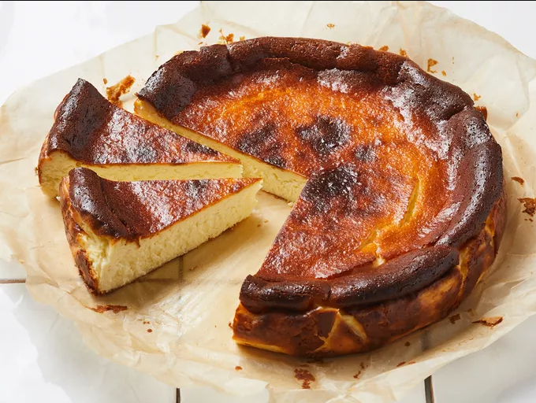

Basque Cheesecake

Recipe
The Basque cheesecake is a rather simple recipe consisting of mainly 5 ingredients.
This includes eggs, cream cheese, granulated sugar, heavy cream and vanilla extract.
These ingredients are all combined together and poured into a tray and cooked in an oven
until the top gets a 'burnt' texture.
It is then left to cool and frozen overnight before
being served.
Ingredients
- 3 eggs
- 2 x Philadelphia cream cheese (250 grams)
- 70 grams of heavy cream
- 100 grams of white granulated sugar
- Teaspoon of vanilla extract
Steps
- Put the cream cheese and granulated white sugar in a bowl and begin to mix
- Incorporate one egg at a time into this mix and lastly add the heavy cream and vanilla extract
- Pour mix into a round tray that is lined with parchment paper
- Preheat the oven to 250°C and place into the oven and cook for roughly 20-25 minutes or until the top is burnt
- Remove from oven, allow to rest to room temperature then place into the fridge overnight
- Take out of the fridge and slice to serve!
Home